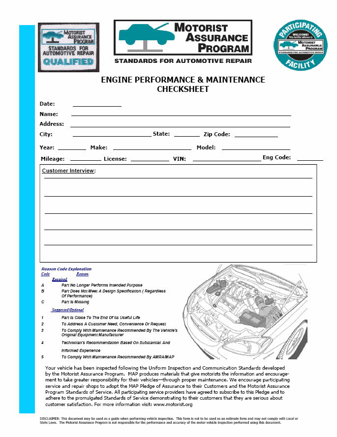
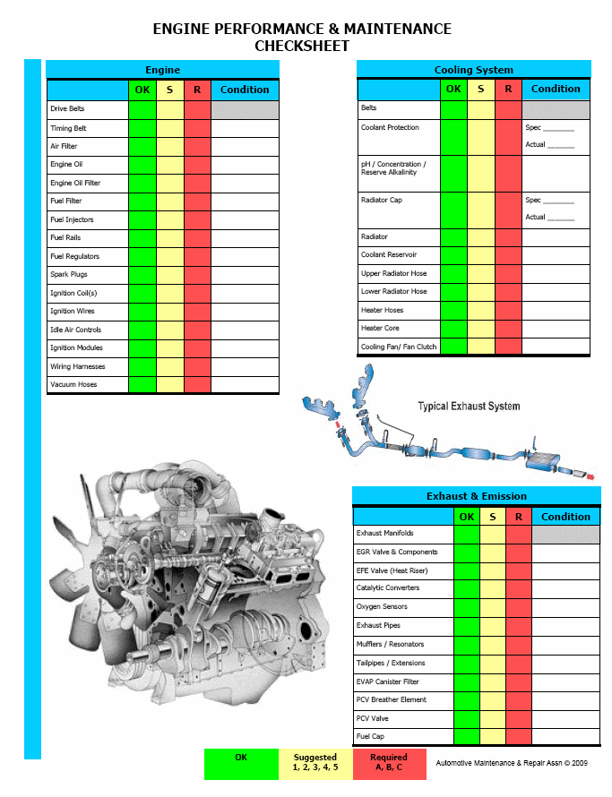

LEMON Manuals
: Even more car manuals for everyone: 1960-2025
Home
>>
Hyundai
>>
2022
>>
Elantra N Line, Standard Trans
>>
Repair and Diagnosis (Single Page)
>>
General Information
>>
Engine Performance
>>
Map - Engine Performance & Maintenance
>>
Engine Performance & Maintenance CHECKSHEET
Engine Performance & Maintenance CHECKSHEET
Fig 1: Engine Performance & Maintenance Checksheet (1 Of 2)

Fig 2: Engine Performance & Maintenance Checksheet (2 Of 2)
